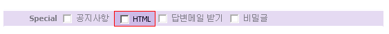
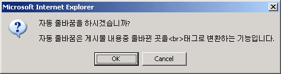

|
HTML 사용에 대한 범위 지정 4. 4.1 부터는 게시물을 작성시 3가지 형태의 HTML 사용방법이 있습니다. 4. HTML을 전혀 사용하지 않는 방법, HTML을 사용하고 자동 줄바꿈을 하는 경우, 완전한 HTML을사용하는 경우입니다. 4. 물론 HTML 사용 권한이 없을 경우에는 허용된 태그만 가능합니다. 4. 게시물을 작성시 HTML 사용이 가능한 게시판의 경우 다음과 같은 항목이 있습니다.  4. 위의 빨간 테두리 표시된 HTML을 선택하면 다음고 같은 알림창이 뜹니다.  4. HTML 사용 할때 자동 줄바꿈을 하겠냐는 것입니다. 4. 버튼을 누르게 되면 모든 엔터 친곳을 <br> 태그로 자동 변환합니다. 4. 만약 게시물 내에 테이블 태그를 사용하고자 할때는 <br>태그로 인해서 테이블 간격이 깨어지며 4. 자바 스크립트등이 에러가 납니다. 4. 버튼을 누르면 입력한 그대로 게시물이 저장됩니다. 4. HTML 사용권한이 있는 회원이 나모나 기타 웹게시물 제작 프로그램으로 제작한 내용을 올릴때에는 4. 자동 줄바꿈을 하지 않아야 HTML이 어긋나지 않습니다. |